Clinical Approach to Chronic Pelvic Pain
- Definition of CPP: pain of at least 6 months' duration, below the umbilicus, severe enough to cause functional disability or require treatment. All three parts.
- Acute pain is a protective mechanism. Chronic pain serves no physiologic purpose. Her two-line slide, and the conceptual heart of the lecture — it is why the goal shifts from "find and fix the lesion" to "reduce pain and restore function."
- Pain intensity is often not proportional to tissue damage. Same lesson as endometriosis in 4.13, generalized.
- Up to 50% of women with CPP have experienced some kind of abuse or trauma. Her slide ends with four exclamation marks on "take a thorough history."
- Listen to the story. These women have often seen numerous specialists and tried many treatments without relief; many feel frustrated and hopeless by the time they reach you.
- It is a big deal systemically: 10% of outpatient gynecology referrals, the indication for 40% of laparoscopies and 20% of hysterectomies for benign disease, and ~$88 million/year in US outpatient visits.
- Pain can arise from five categories of structure: pelvic viscera · somatic structures · MSK and ligamentous · GI and urologic (referred) · and neurologic. Learn the seven evidence-backed common causes in the table below.
- Five cases, five diagnoses: primary dysmenorrhea · endometriosis · adenomyosis · fibroids · myofascial pelvic pain.
- Adenomyosis and myofascial pain are both clinical diagnoses — history and physical, not a test. Adenomyosis is a tender, enlarged, boggy uterus in a parous woman in her 40s–50s.
- Myofascial pelvic pain needs a multidisciplinary approach — gynecology, physiotherapy, pain service, psychiatry/psychotherapy. And the honest goal is pain reduction and improved function, not necessarily elimination.
Learning Objectives
- Outline a clinical approach to both acute and chronic pelvic pain.
- Recognize common causes of acute and chronic pelvic pain.
- List a differential diagnosis for both acute and chronic pelvic pain.
- Outline appropriate investigations for pelvic pain.
- Identify treatment options for common causes of pelvic pain.
Dr. Stephanie Black's 40-minute module — the second half of the deck that begins with 4.15 Acute Pelvic Pain. The general approach — the pain history (OPQRST), the physical exam, the past/social history and the investigations — is on that page and is not repeated here; read it first. Like the acute module, this one is built as clinical cases with the answer on the slide, and she intends you to pause and build your own differential before revealing it. Two of the five cases are covered in far more depth elsewhere and are cross-linked rather than duplicated: 4.13 Endometriosis is her own separate module using the same slides, and the pathology of adenomyosis and leiomyoma is Dr. Weir's 4.12.
This module's two segments are H5P interactive videos hosted outside Panopto (Case 1–2, 16 min; Cases 3–5, 24 min), and they carry no caption track of any kind — so unlike every other Thursday lecture, there is no transcript for this one at all. This page is therefore built entirely from the 46-slide deck, which fortunately contains the full case content and every answer. What is missing is Dr. Black's spoken commentary, which on the acute page added a fair amount. Where a slide's reasoning needed unpacking, the connection is drawn from her acute module's narration or from the parallel content in 4.13 and 4.12, and is marked as such — nothing here is invented.
What Makes Chronic Pain Different
The Approach, and the Numbers
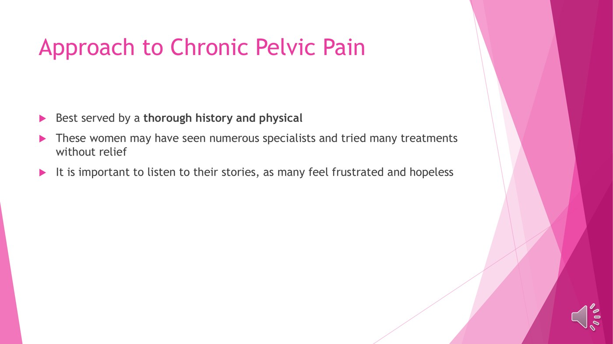
The second and third bullets are the clinical skill being taught here. Listening is an intervention, not a preamble to one.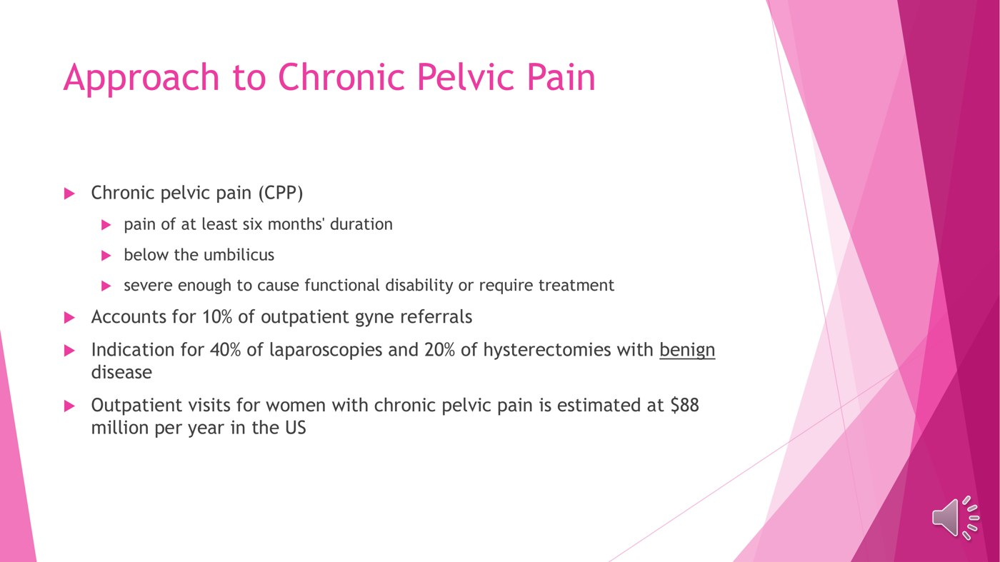
The three-part definition plus the four numbers. 40% of laparoscopies and 20% of hysterectomies for benign disease are done for this.| Criterion | Requirement |
|---|---|
| Duration | At least 6 months |
| Location | Below the umbilicus |
| Severity | Severe enough to cause functional disability or require treatment |
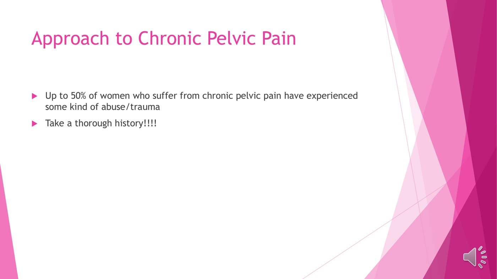
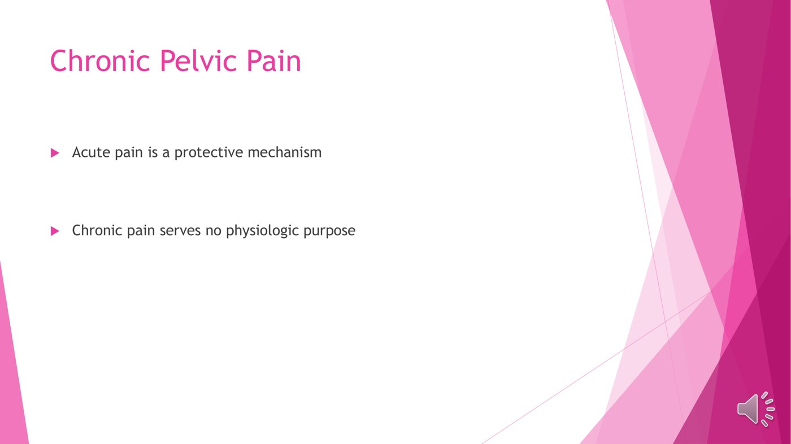
Acute pain is protective — it signals tissue damage and drives you to act, which is exactly the logic of 4.15, where the pain points at a ruptured ectopic or a torted ovary that needs fixing now. Chronic pain serves no physiologic purpose — it is no longer a reliable report about tissue. Two consequences follow, and both are on her slides: pain intensity is often not proportional to tissue damage, so a normal laparoscopy does not mean the pain isn't real; and the therapeutic goal shifts from finding a lesion to cure toward reducing pain and restoring function — which is exactly how she frames the goal in Case 5.
This also explains the uncomfortable statistic above: if 40% of laparoscopies are done for CPP, a lot of them find nothing, and the diagnostic reflex of "look inside for the lesion" is a poor fit for a pain that isn't reporting a lesion.
The Differential
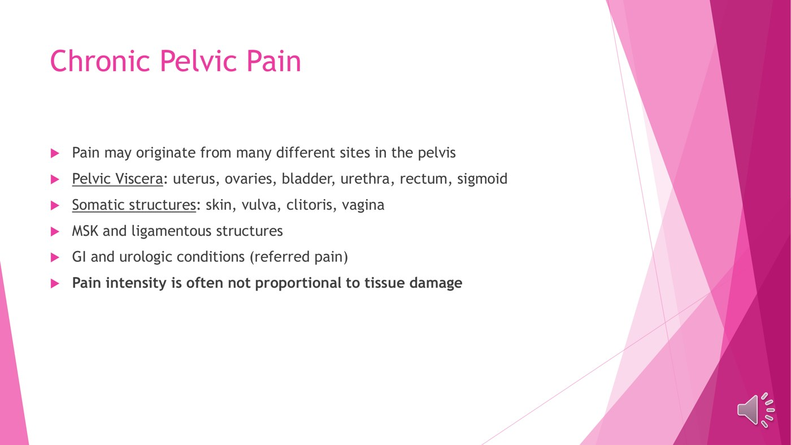
![Table titled Conditions associated with chronic pelvic pain in women, grouped into six categories. Gynecologic: endometriosis (asterisked), chronic pelvic inflammatory disease (asterisked), pelvic adhesions, pelvic congestion or pelvic varicosities, adenomyosis, ovarian remnant syndrome, residual ovary syndrome, leiomyoma, endosalpingiosis, neoplasia, fallopian tubal prolapse post-hysterectomy, tuberculous salpingitis, benign cystic mesothelioma, postoperative peritoneal cysts. Mental health issues: somatization, substance abuse, physical and sexual abuse, depression, sleep disorders. Urinary tract: interstitial cystitis or painful bladder syndrome (asterisked), recurrent urinary tract infection, urethral diverticulum, chronic urethral syndrome, neoplasia, radiation cystitis. Gastrointestinal tract: irritable bowel syndrome (asterisked), inflammatory bowel disease and other causes of colitis, diverticular colitis, chronic intermittent bowel obstruction, neoplasia, chronic constipation, celiac disease. Musculoskeletal: pelvic floor myalgia (asterisked), myofascial pain with trigger points (asterisked), coccygodynia, piriformis syndrome, hernia, abnormal posture, fibromyalgia, peripartum pelvic pain syndrome. Neurologic disorders: neuralgia especially of the iliohypogastric, ilioinguinal, genitofemoral or pudendal nerves (asterisked), herniated nucleus pulposus, neoplasia, neuropathic pain, abdominal epilepsy, abdominal migraine. Footnote: these diagnoses are the most common causes of CPP and backed by substantial evidence.](../../../../assets/images/week-4/chronic-pelvic-pain/conditions-table.jpg)
| Category | The evidence-backed common causes |
|---|---|
| Gynecologic | Endometriosis · chronic pelvic inflammatory disease |
| Urinary tract | Interstitial cystitis / painful bladder syndrome |
| Gastrointestinal | Irritable bowel syndrome |
| Musculoskeletal | Pelvic floor myalgia · myofascial pain (trigger points) |
| Neurologic | Neuralgia — especially iliohypogastric, ilioinguinal, genitofemoral or pudendal nerves |
Only two of the seven best-evidenced causes are gynecologic. Two are musculoskeletal, one urologic, one GI, one neurologic. That is a strong argument against reflexively treating chronic pelvic pain as a gynecologic problem — and it is the structural reason Case 5 ends with a multidisciplinary team rather than an operation. It also explains her own remark on that case slide: "differentiating the cause of pain may be difficult for the gynecologist."
Worth also noticing the mental health block in the full table — somatization, substance use, physical and sexual abuse, depression, sleep disorders. Given the 50% abuse/trauma figure, these are not afterthoughts in the differential.
Case 1 — Primary Dysmenorrhea
Case 1: Jessica, 19
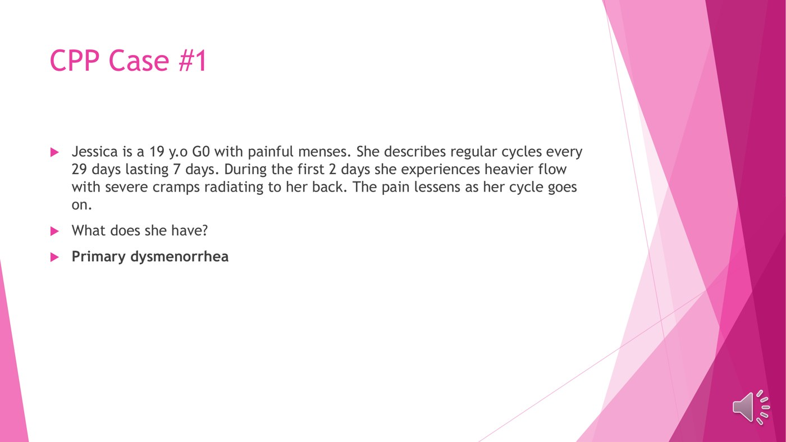
Everything in the history is consistent with a normal cycle producing pain: regular 29-day cycles, heavier flow in the first two days, and pain that lessens as the cycle goes on — i.e. the pain tracks the flow. Compare with Case 2 (the same patient six years later), where pain begins 2 days before menses and is worsening — the two features that mark it out as secondary. Dr. Weir makes the same primary-vs-secondary cut in 4.12: primary is functional and younger, secondary is structural and acquired, and therefore commoner with age.
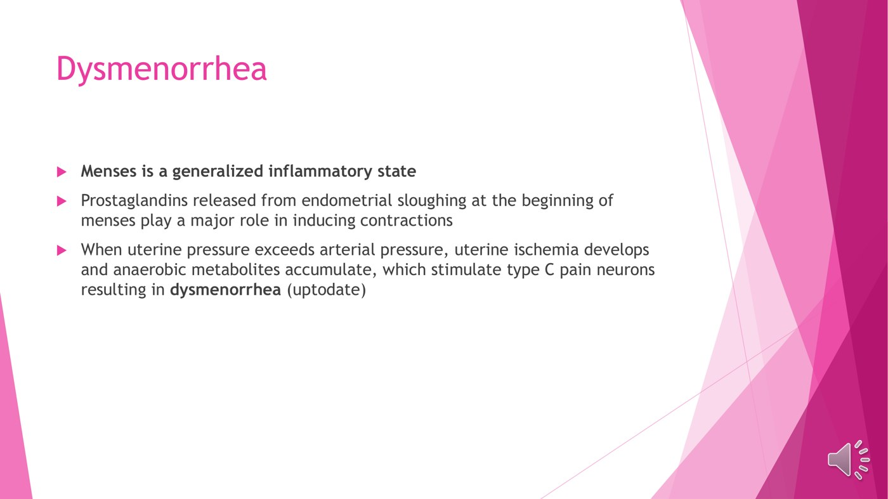
The mechanism, and it is a proper physiological chain — unpacked below.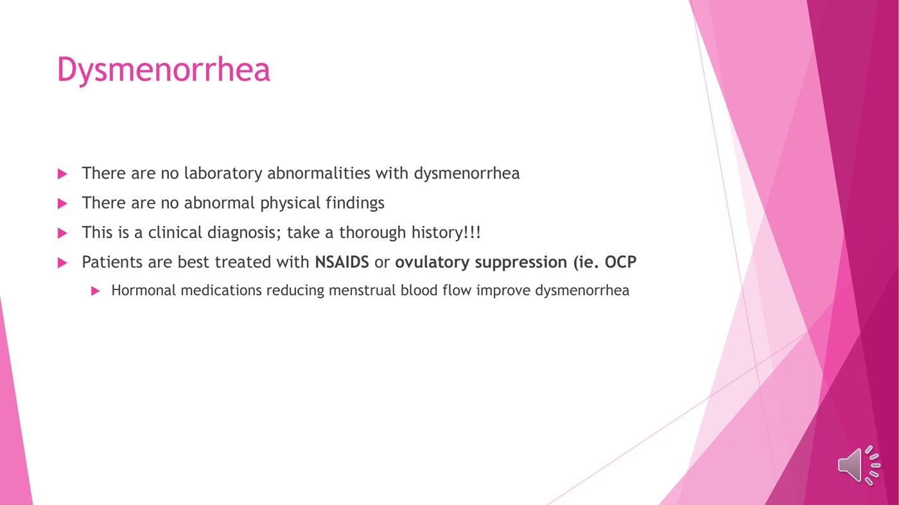
No lab abnormalities. No abnormal physical findings. A clinical diagnosis. Which means the history is the entire test.The mechanism tells you both drugs directly. NSAIDs work at step 2 — they inhibit prostaglandin synthesis, so there are fewer and weaker contractions and pressure never exceeds arterial pressure. Ovulatory suppression (e.g. the OCP) works upstream of step 1: as her sub-bullet says, hormonal medications that reduce menstrual blood flow improve dysmenorrhea — less endometrium to slough means less prostaglandin released. That is the same "thin the endometrium" logic as in 4.10 and 4.13, arriving at the same drugs from a third direction.
Case 2 — Endometriosis
Case 2: Jessica, now 25
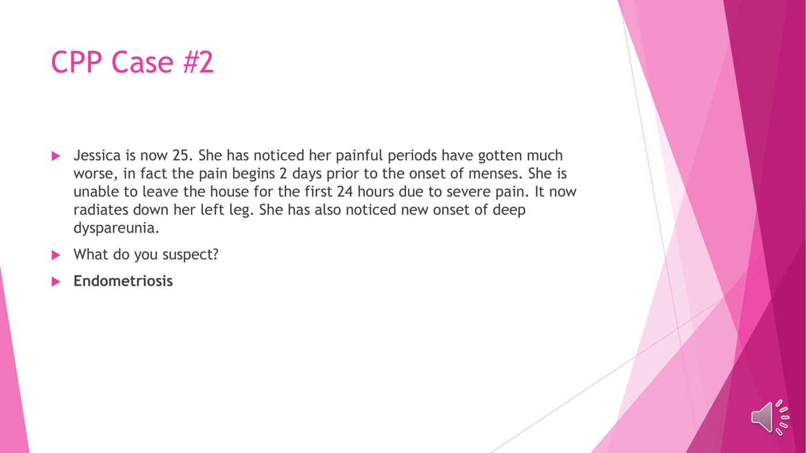
The nine endometriosis slides that follow in this deck are the same slides as Dr. Black's separate 15-minute endometriosis module, so they are not duplicated here. Go to 4.13 Endometriosis for the definition and epidemiology, the three etiologic theories, the dyspareunia approach, the physical findings, the full treatment ladder (pseudopregnancy vs pseudomenopause), the complications, and the laparoscopic appearances. The pathology is in 4.12.
The four features that changed from Case 1, and what each one signals: the pain now begins before menses (not prostaglandin-driven flow pain) · it is much worse than before (acquired, progressive) · it radiates down her left leg (disease beyond the uterus) · and there is new deep dyspareunia (deep, so masses, adhesions or endometriosis — see the deep-vs-superficial split in 4.13).
Case 3 — Adenomyosis
Case 3: Jessica, now 42
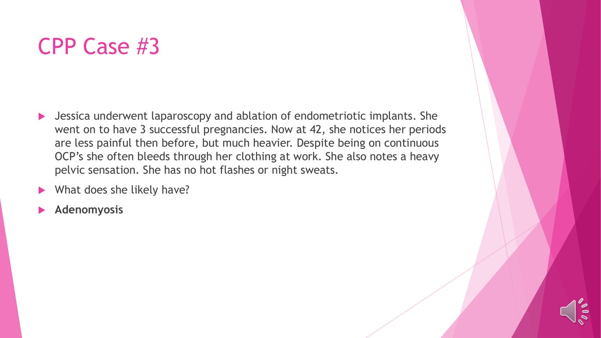
Three successful pregnancies — adenomyosis is a disease of parous women; Dr. Weir's balloon model in 4.12 explains why it essentially requires a term pregnancy. Now 42 — it presents in the 4th and 5th decades. Periods less painful than before but much heavier — the endometriosis was treated, and this is a new problem dominated by bleeding rather than pain. Bleeding through her clothing despite continuous OCPs — failure of medical management, which in 4.12 is precisely the route by which adenomyosis gets diagnosed. A heavy pelvic sensation — the diffusely enlarged uterus. And no hot flashes or night sweats — that clause is there to rule out menopause as the explanation for her changing periods at 42.
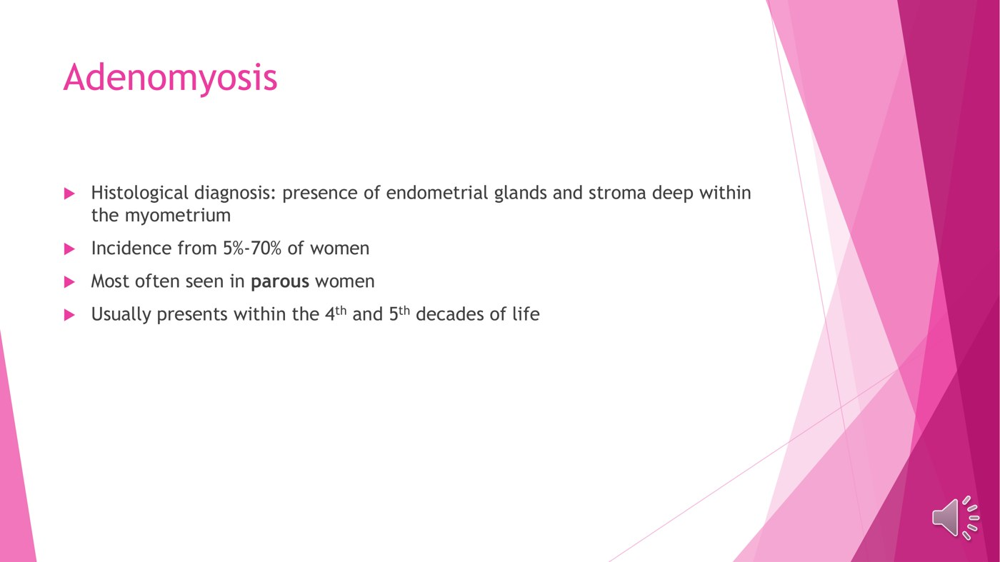
Note the enormous incidence range, 5–70% — a consequence of it being an incidental histological finding, so the number depends entirely on who gets a hysterectomy. Dr. Weir's figure for resected uteri is 15–30%.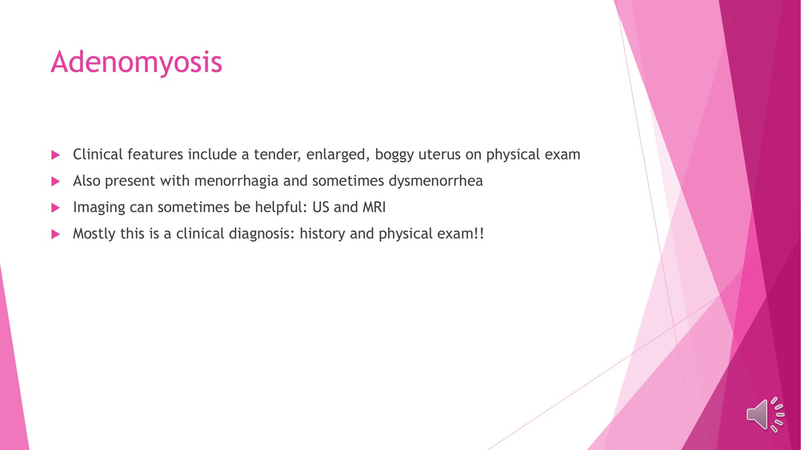
Tender, enlarged, boggy uterus — the three-word exam finding to memorize. Mostly a clinical diagnosis.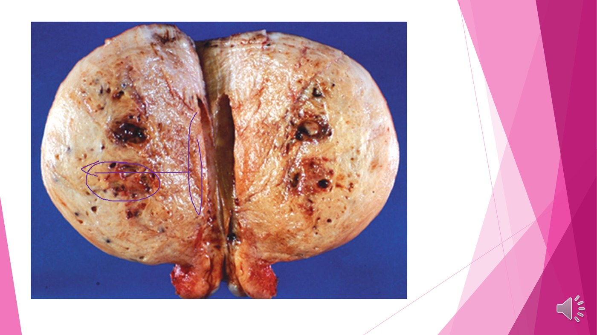
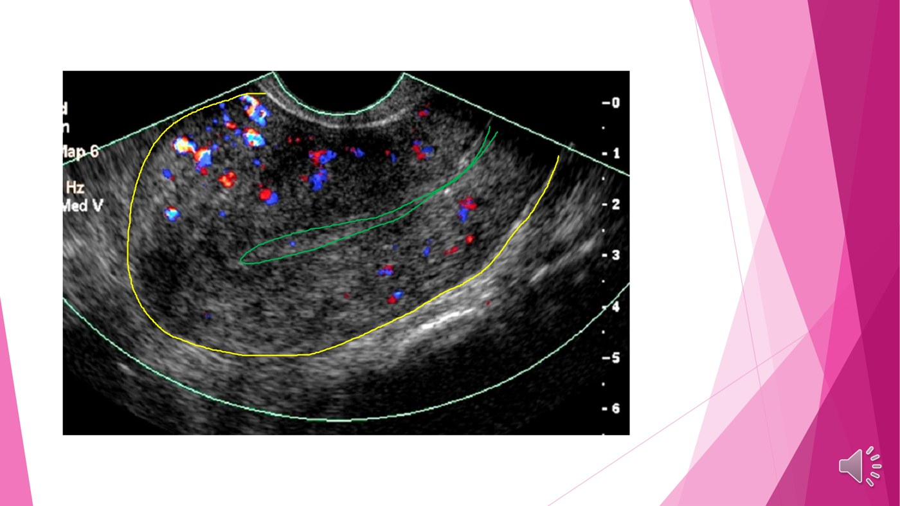
On ultrasound: a heterogeneous myometrium with an indistinct endometrial–myometrial junction.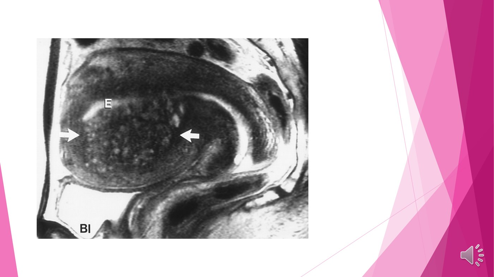
On MRI: the arrows mark a widened, heterogeneous junctional zone. This is the most specific imaging finding — but note her slide still says imaging is only sometimes helpful.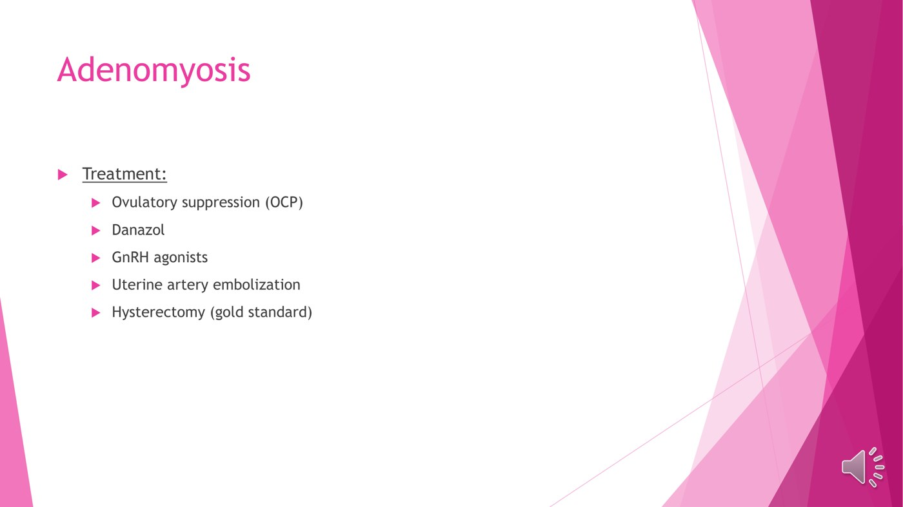
The deck puts these two cases three slides apart, and the contrast is the payoff.
| Endometriosis (Case 2) | Adenomyosis (Case 3) | |
|---|---|---|
| Where the endometrium is | Outside the uterus | Deep within the myometrium |
| Typical age | 20s–30s | 4th–5th decades |
| Parity | Often nulliparous / infertile | Parous — uncommon in nulligravids |
| Dominant symptom | Pain — dysmenorrhea, deep dyspareunia | Menorrhagia, sometimes dysmenorrhea, heavy pelvic sensation |
| Exam | Uterosacral nodularity, fixed uterus, adnexal mass — or nothing | Tender, enlarged, boggy uterus |
| Infertility | Yes (tubal occlusion from adhesions) | No — Dr. Weir's quiz answer in 4.12 |
| Definitive treatment | Hysterectomy ± oophorectomy — last resort | Hysterectomy — gold standard |
Case 4 — Fibroids
The longest section of the deck, and the one that goes deepest into treatment.
Case 4: Erica, 35
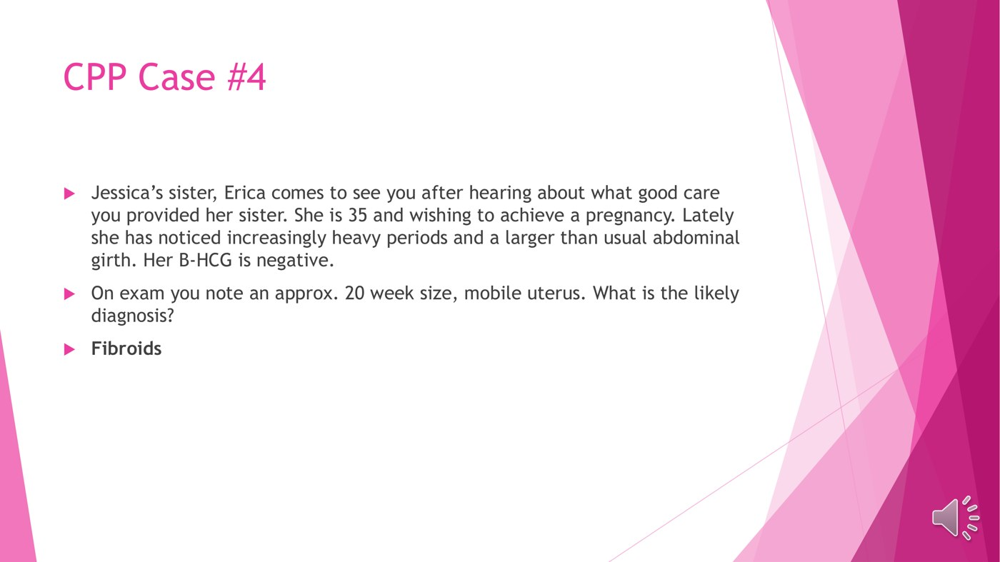
"20-week size, mobile uterus." Mobile matters — in 4.10 Dr. Arntfield teaches that benign enlargement stays mobile while malignancy fixes the pelvic structures. And at 35 with a mobile, slowly enlarging, presumably multiple-fibroid uterus, this is not the leiomyosarcoma pattern Dr. Weir warns about in 4.12 (single dominant rapidly growing mass in a peri/postmenopausal woman).
"Wishing to achieve a pregnancy." This is the constraint that makes the treatment section meaningful. It rules out hysterectomy, and — as her own slide notes further down — pregnancy after uterine artery embolization is not advised. It also rules out the ovulatory suppression that would otherwise be first line. In practice it points at myomectomy, or hysteroscopic resection if the fibroid is submucosal.
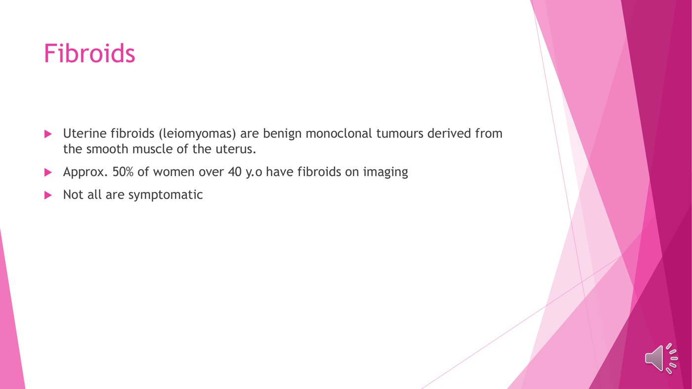
Benign monoclonal tumours of uterine smooth muscle. ~50% of women over 40 have them on imaging, and not all are symptomatic.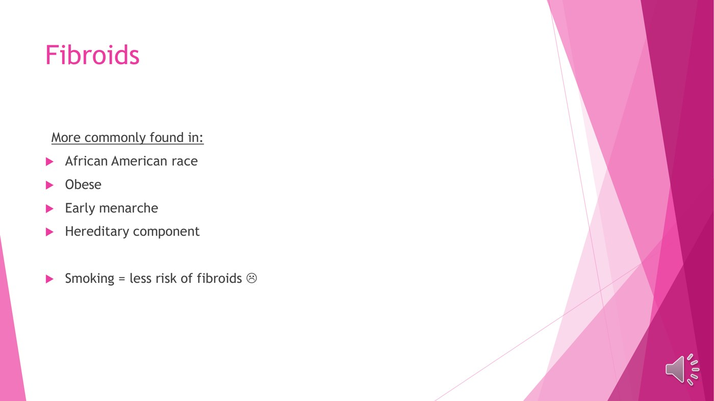
Risk factors — and note the oddity at the bottom: smoking is associated with less risk of fibroids. Not a reason to smoke; a reason to remember estrogen is the driver.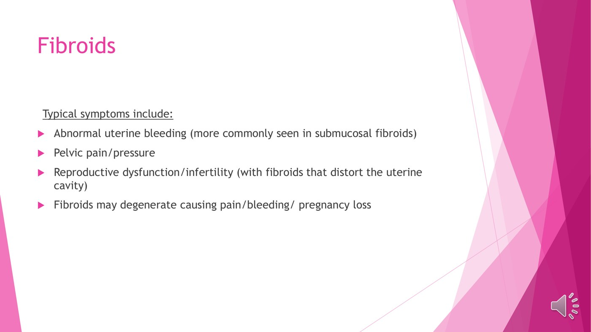
Location Determines Everything
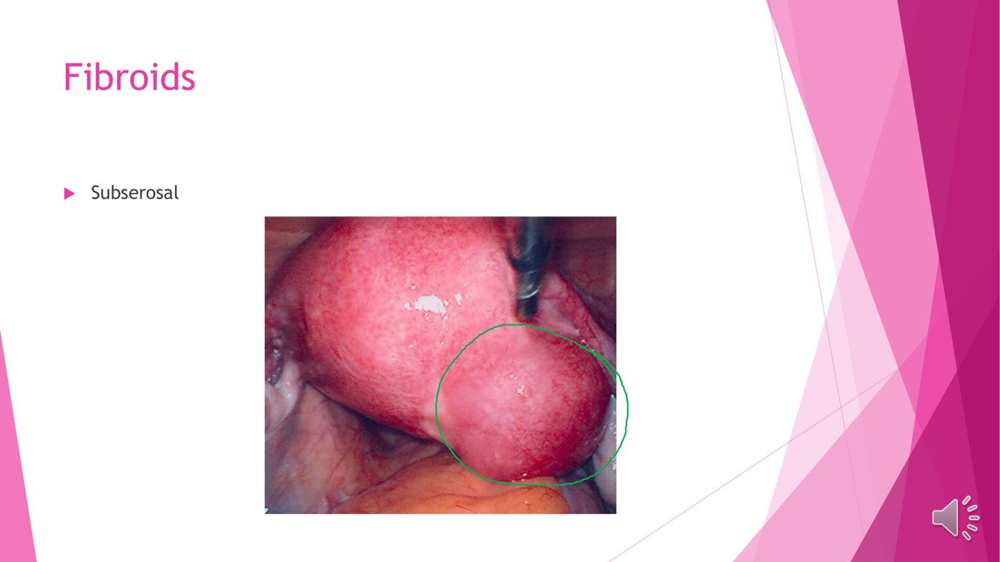
Subserosal — bulging outward under the serosa. Causes pressure and mass effect.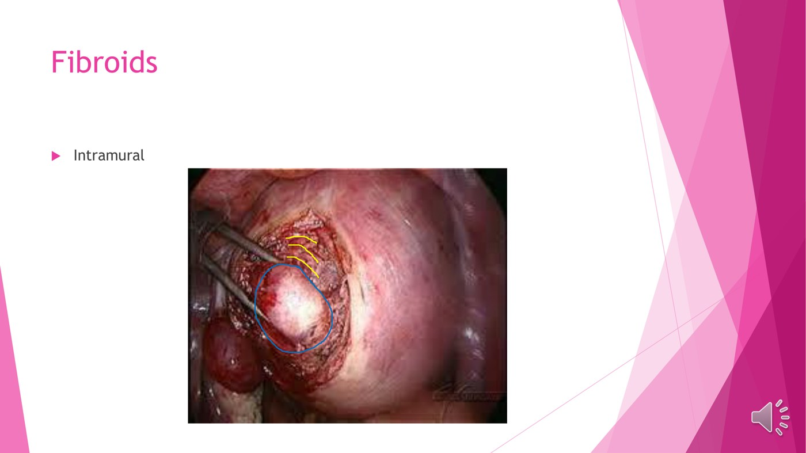
Intramural — within the wall. The commonest site.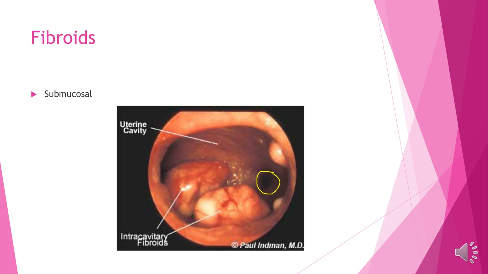
Submucosal / intracavitary — protruding into the cavity. The one that bleeds and causes infertility.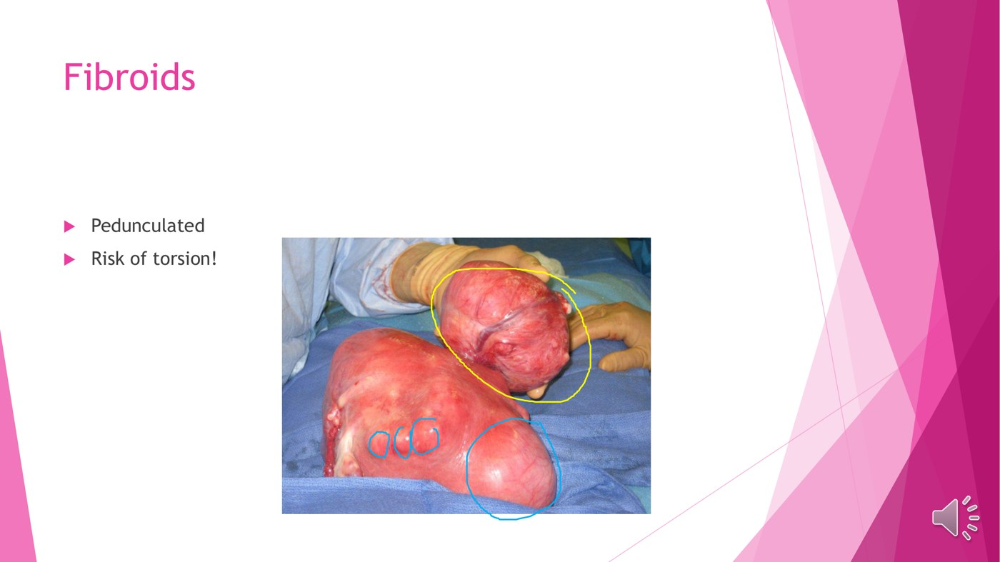
Treatment
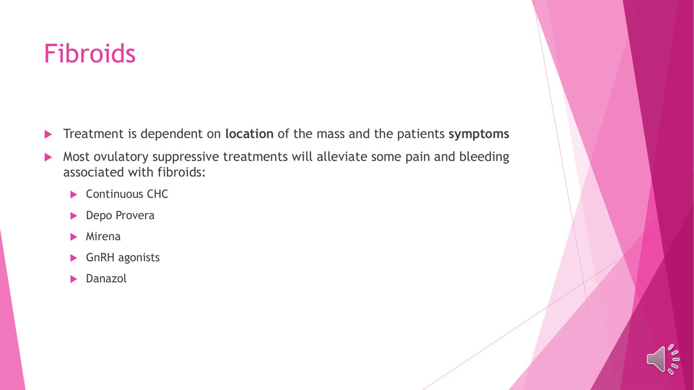
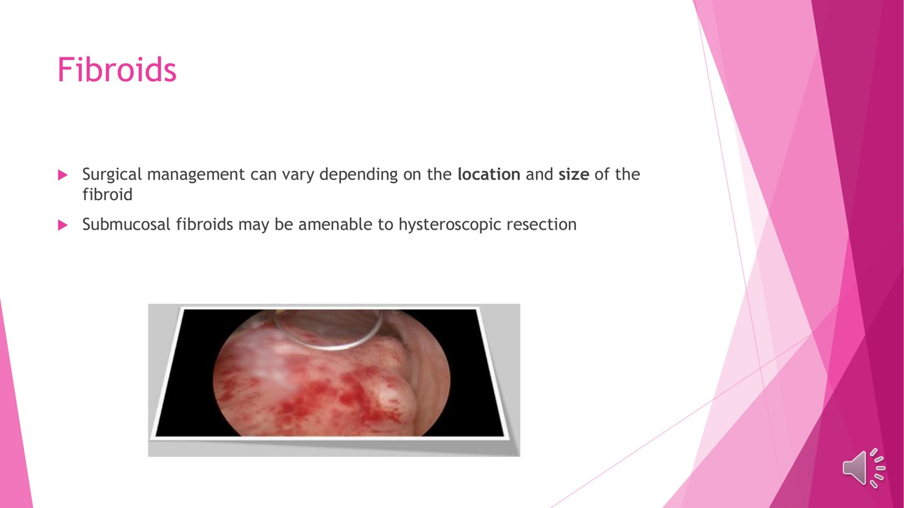
Submucosal → hysteroscopic resection — no abdominal incision, and it targets exactly the fibroids causing bleeding and infertility.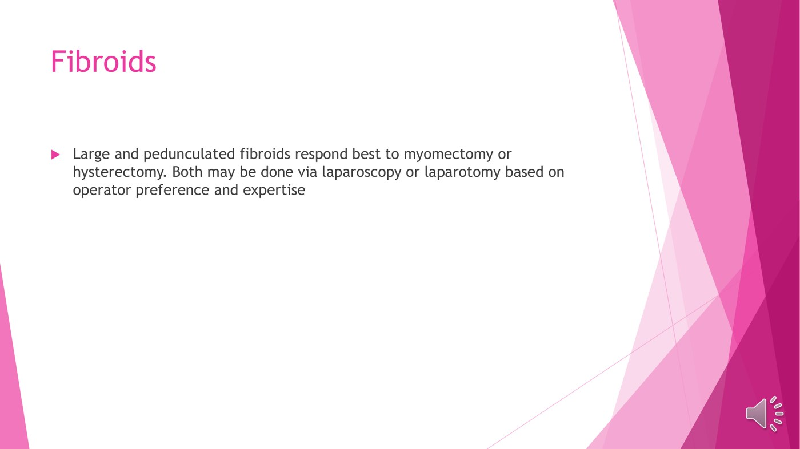
Large and pedunculated → myomectomy or hysterectomy, by laparoscopy or laparotomy. Myomectomy is the uterus-sparing option — the relevant one for Erica.![Slide titled Fibroids: intramural, subserosal and submucosal fibroids may respond to uterine artery embolization; UAE is based upon the hypothesis that reduction of myometrial arterial blood flow will result in infarction of fibroids and control symptoms; tiny particles or microspheres (polyvinyl alcohol particles 500 to 700 and/or 700 to 900 microns in size, or tris-acryl gelatin microspheres 500 to 700 and/or 700 to 900 microns in size) are used to obstruct the uterine arteries bilaterally; accessed via radial or femoral arteries by IR; pregnancy post UAE is not advised - case reports only.](../../../../assets/images/week-4/chronic-pelvic-pain/fibroids-uae.jpg)
| Fibroid | Best-matched treatment | Fertility-compatible? |
|---|---|---|
| Submucosal / intracavitary | Hysteroscopic resection | Yes — and it removes the cavity distortion causing the infertility |
| Intramural, subserosal, submucosal | Uterine artery embolization | No — pregnancy post-UAE is not advised |
| Large or pedunculated | Myomectomy | Yes — uterus-sparing |
| Large or pedunculated | Hysterectomy | No |
| Any, symptom control only | Continuous CHC, Depo, Mirena, GnRH agonist, danazol | No — these suppress ovulation by design |
Case 5 — Myofascial Pelvic Pain
Deliberately last. This is the case with nothing to find and nothing to cut out.
Case 5: Mya, 23
![Slide titled CPP Case number 5: Mya is a 23 year old nulliparous woman presenting with pelvic pain for the past 5 years. It is not associated with any time in her cycle. She describes it as generalized, debilitating pain that prevents her from working or attending school. Her cycles are regular. She is not sexually active due to the pain. On physical exam she has a globally tender pelvis; midline mobile uterus with no adnexal masses. Speculum exam was not carried out due to extreme pain. What is her diagnosis? Answer: myofascial pelvic pain.](../../../../assets/images/week-4/chronic-pelvic-pain/case5.jpg)
Read it as a systematic set of negatives. "Not associated with any time in her cycle" and "cycles are regular" — rules out dysmenorrhea, endometriosis, adenomyosis and fibroids, all of which are cycle-linked. Nulliparous at 23 — wrong demographic for adenomyosis and fibroids. Midline mobile uterus, no adnexal masses — no structural lesion. What remains is globally tender pelvis and pain so severe the speculum exam could not be done at all. That last detail is the finding, not a gap in the assessment.
And note the functional cost, which is the definition's third criterion in action: it prevents her from working or attending school, and she is not sexually active because of the pain — five years of it, starting at 18.
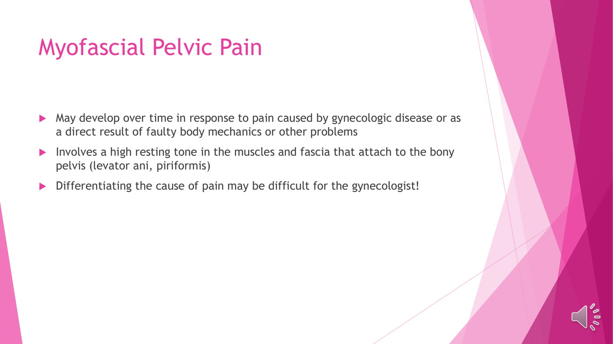
Her first bullet says myofascial pain may develop in response to pain caused by gynecologic disease — or arise independently from faulty body mechanics. So it can be both a consequence of endometriosis or fibroids and a cause of pain in its own right, which means treating the gynecologic lesion may not resolve the pain, and the pelvic floor may need treating separately. That is why "differentiating the cause of pain may be difficult for the gynecologist," and it ties back to "pain intensity is often not proportional to tissue damage" from the start of the lecture: a woman with treated endometriosis and persistent pain has not necessarily failed treatment — she may have acquired a second, muscular pain generator.
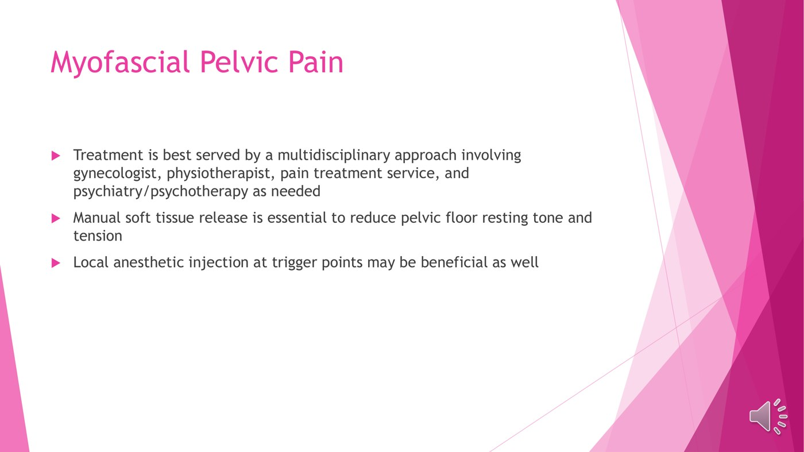
Multidisciplinary is the operative word. Manual soft tissue release is "essential" — physiotherapy is core treatment, not an adjunct. Plus trigger-point local anaesthetic injection.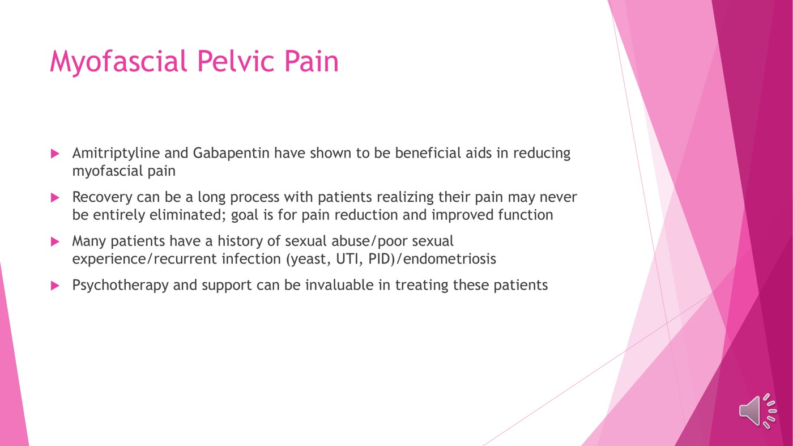
Amitriptyline and gabapentin — neuropathic agents, not analgesics, consistent with pain that no longer reports tissue damage. And the honest framing of the goal.On prognosis, honestly stated: "Recovery can be a long process with patients realizing their pain may never be entirely eliminated; the goal is for pain reduction and improved function." For a 23-year-old who cannot work or attend school, improved function is the outcome that matters, and promising elimination would be both untrue and unkind.
On the associated history: many of these patients have a history of sexual abuse, poor sexual experience, recurrent infection (yeast, UTI, PID), or endometriosis. That list closes the loop with the slide near the top of the lecture — up to 50% of women with CPP have experienced abuse or trauma — and it reframes Mya's "not sexually active due to the pain" as something to ask about gently rather than record and move past. It is also a coherent mechanism: repeated pain or trauma involving the pelvis produces protective guarding, and sustained guarding is the high resting tone that defines the condition.
Built from Dr. Stephanie Black's "Clinical Approach to Chronic Pelvic Pain" module (40 min) and its 46-slide deck — the second half of the deck whose first half is 4.15. All figures are slides from that deck; the conditions-associated-with-CPP table and the dysmenorrhea mechanism slide are from UpToDate, and the submucosal fibroid illustration is credited to Paul Indman MD on her slide. This module's two video segments are H5P interactive videos with no caption track whatsoever, so there is no transcript for this lecture — the page is built entirely from the slides, which do carry the complete case content and every answer. Because her spoken commentary is unavailable, the explanatory boxes draw their connective reasoning from three places, all cross-linked where used: her own narration in the acute module, her endometriosis module (4.13, which shares nine slides with this deck and is why Case 2 is not duplicated here), and Dr. Weir's pathology module (4.12) for adenomyosis and leiomyoma. Nothing on this page is drawn from outside these course materials. The one numerical discrepancy worth noting is flagged in the text: this deck gives the incidence of adenomyosis as 5–70% while Dr. Weir's handout gives 15–30% of resected uteri — both are describing an incidental histological finding, so the figure depends on the population sampled. Related pages: 4.15 for the shared general approach and the pain history, 4.13 for Case 2 in full, 4.12 for the pathology of adenomyosis and fibroids, 4.10 for the bleeding side of fibroids and adenomyosis, and 4.6 for chronic PID.